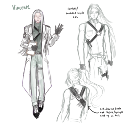
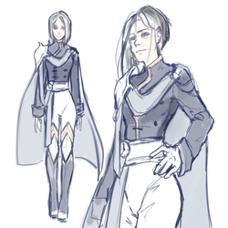
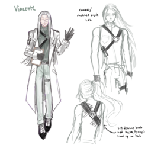
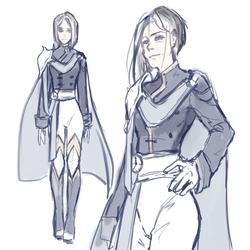

Helen Yao
Self-taught student artist learning Psychology. Currently associated with GameSpawn as an artist for Augment in hopes of one day transfer to Game Design. Has experience with 3D Design in Autodesk Maya and digital art.
I am an aspiring student artist currently pursuing a degree in psychology at University of California at Riverside with a strong focus on the intersection of art and human behavior. Throughout my academic journey, I have developed a deep understanding of the human mind and the psychological elements that make experiences engaging and memorable. This knowledge has served as a valuable foundation for my artistic endeavors, as it allows me to create meaningful and emotionally impactful designs.
My passion for gaming and the limitless possibilities it offers has led me to explore the world of game design. I am fascinated by the process of bringing virtual worlds to life and designing interactive experiences that captivate players. With a natural talent for visual storytelling and a keen eye for detail, I have honed my skills in digital art to create visually stunning and immersive game environments. I have also taken a course in 3D design using Autodesk Maya and am very open to learning more and mastering the functions of the website along with 3D design.
In my coursework, I have gained a solid understanding of the principles of psychology, including cognitive processes, human perception, and emotional responses. This knowledge enables me to create game environments that evoke specific emotions and engage players on a deeper level. By incorporating psychological theories into my designs, I strive to create experiences that resonate with players and leave a lasting impact.
During my academic journey, I have had the opportunity to work on several game design projects, where I contributed to the creation of compelling characters, environments, and props. Through these experiences, I have experience in 3D modeling, texturing, and rendering using industry-standard software such as Maya. I have also gained proficiency in digital art techniques, including concept art, character design, and visual storytelling. As a student in UCR, I am associated with the Gamespawn club working for the game–Augment as an artist. Thus far, I’ve created character designs, finalized character portraits, particle designs, and character profile pictures.
In addition to my technical skills, I possess strong communication and collaboration abilities. I have actively participated in group projects, where I collaborated with fellow artists, programmers, and designers to bring cohesive visions to life. I believe in the power of teamwork and effective communication to create seamless and immersive game experiences.
Furthermore, my artistic pursuits have taught me the importance of adaptability and problem-solving. I am constantly pushing my creative boundaries and exploring new techniques to stay up-to-date with the latest trends and advancements in the gaming industry. I thrive in dynamic and fast-paced environments, and I am always eager to learn and grow as an artist and designer.
With my background in psychology, combined with my expertise in 3D design and digital art, I am confident in my ability to contribute to the creation of visually stunning and emotionally compelling games. I am excited to bring my unique perspective and creative abilities to a game design team, where I can contribute to the development of immersive gaming experiences.
Experience
Crew Member
• Takes orders and makes burgers, fries, and other produce.
• Opens and closes restaurant, cleans, refills items in main dining area.
• Puts together hot plates, salads, and restocks ingredients and food in back.
Crew Member
• Take orders through drive-through and handle money while interacting with customers.
• Assemble and present completed treat orders, maintain and clean workspace, restocking supplies, ingredients, and materials
Freelance Artist
• Served 20+ international clients through artwork commissions while building a social media following of 5000+ on Instagram.
• Developed artistic abilities while self-studying traditional art mediums such as copic marker, graphite, watercolor, pen, colored pencil, etc.
• Managed international shipping operations, advertised artwork while optimizing outreach, and maintained professional communication with clients.
Education
UC Riverside
Hauppauge High School
Wantagh High School
Portfolio





 